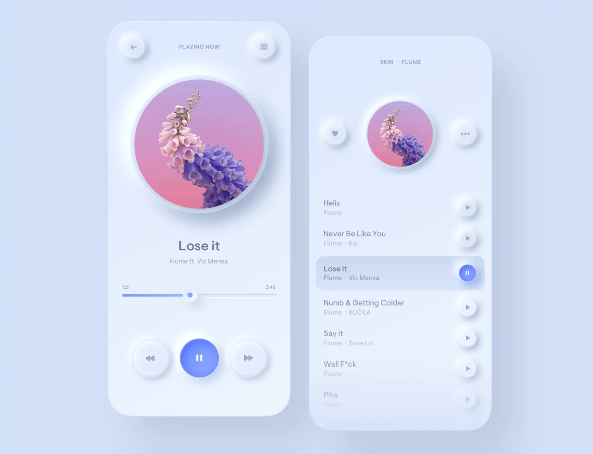

What you know about Neumorphism
Do you want to know more about Neumorphism? Click for learning
What is Neumorphism
Neumorphism often referred to as Soft design, is a skeuomorphic design adaption coupled with flat design. It is a visual effect that mixes background colours, shadows, shapes, gradients, and highlights to achieve intense yet minimal real-life graphic effects on the user interface elements.
What about UI and UX
The main issue Neumorphism has in terms of accessibility is contrast; you'll notice that most Neumorphic designs use a grey-on-white colour scheme making it challenging for people to see if not implemented well, especially in bright light.
The image below displays an original Neumorphic design and the outcome under low vision.

Buttons
You should consider the normal and hover/clicked state when making a Neumorphic button. I've demonstrated how to style a button using the Neumorphism technique in the code sample below:
body {
background: #ccc;
display: grid;
place-items: center;
}
form {
width: 250px;
background: #ccc;
border: none;
box-shadow: 5px 5px 10px rgba(163, 177, 198, 0.5),
-5px -5px 10px rgba(255, 255, 255, 0.6);
padding: 20px;
border-radius: 15px;
display: flex;
flex-direction: column;
}
</style>
Conclusion
Using Neumorphism appropriately can produce mind-blowing results. You will have realistic-looking 3D effects, which improve your users' experience.